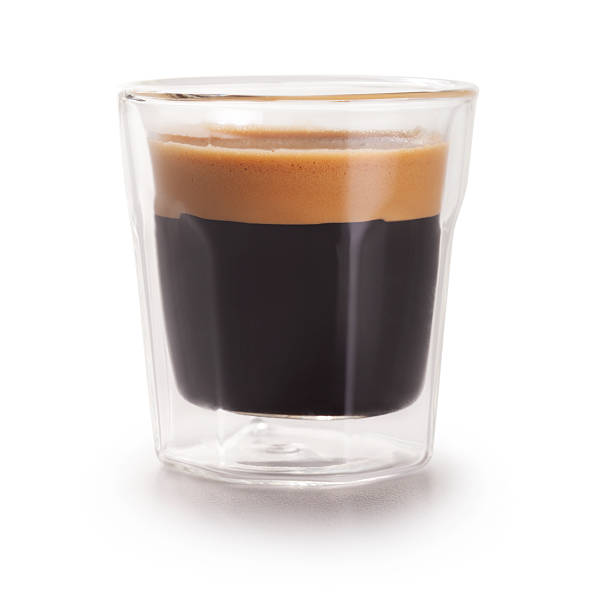

Espresso
₱70

Americano
₱110

Latte
₱130

Cappuccino
₱140
Looking for a cozy spot to unwind, catch up with friends, or just enjoy a great cup of coffee? You’ve come to the right place.
At CozyCup Café, we serve comfort in every cup—whether you're a local regular or just passing through. Come discover your perfect brew and make yourself at home.
₱70
₱110
₱130
₱140
₱165
₱175

₱80
“Best coffee in town! Cozy vibes and friendly staff.”
– Joshua A.
“Perfect spot to study or chill. Their caramel latte is my go-to!”
– Joel D.
“Love the ambiance and the playlist. Feels like home.”
– Eugine S.
CozyCup Café started with a simple idea: to create a space where people could slow down, feel at home, and enjoy a really good cup of coffee. Whether you're here to study, catch up with friends, or just take a break from the busy world outside, we've got a seat waiting for you.
We’re all about warm vibes, friendly faces, and drinks that hit the spot. Our team loves what we do, and we hope that shows in every brew we serve. So come in, get comfy, and make yourself at home—we’re glad you’re here.
We’re here and happy to help! Whether you have a question about our menu, want to reserve a table, or just feel like saying hello, send us a message below.
Email: cozycup_rr@gmail.com
Phone: (+63) 912-345-6789
Address: 123 Sampaguita St, Ibaan, Calabarzon, Philippines
Hours: Mon–Sun: 8:00 AM – 9:00 PM